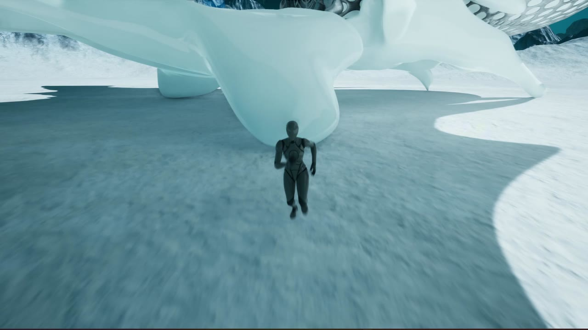
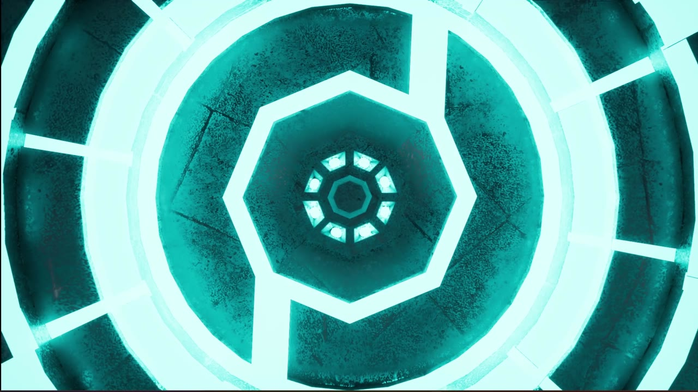

SCAD / Fall 2025 / First-semester Unreal Engine work
Epic Door
A threshold into another world.
A third-person Unreal Engine scene study built around a sci-fi doorway, an icy landscape, and a glowing portal.
- Creator
- Zhaolin Hu
- Engine
- Unreal Engine
- Focus
- Environment & atmosphere
Spatial interaction - Format
- Recorded project demo
2:03 · Full recording

01 / Project in motion
Watch the complete demonstration.
Full-length recording with its original audio, optimized for web playback. Open video directly ↗
02 / Experience
A threshold into another world.
The demo follows a third-person character across an icy, otherworldly setting toward a circular architectural doorway. A sequence of close views draws attention to the door’s layered surfaces and luminous rings before the character approaches and passes through the portal.
A destination in the landscape
The circular doorway acts as a visual anchor against a pale terrain and cyan sky. Character movement gives the scene a readable sense of scale and approach.
A change in state
Layered rings and emissive surfaces build toward the illuminated portal, making the doorway the central event of the demonstration.
Movement through the threshold
The sequence returns to the playable character and follows the approach into the doorway, connecting the environment’s visual focus with an action.
03 / In-game views
Captured from the running project.


04 / Project context
Early exploration in real-time interaction.
Created during my first semester at SCAD in Fall 2025, this Unreal Engine project is part of my early work in building interactive experiences. This page presents the recorded result and the interactions visible in the demo.
Project by Zhaolin Hu. Screenshots are taken from the original recording. Third-party assets and audio belong to their respective creators; original on-screen credits are retained where present in the video.